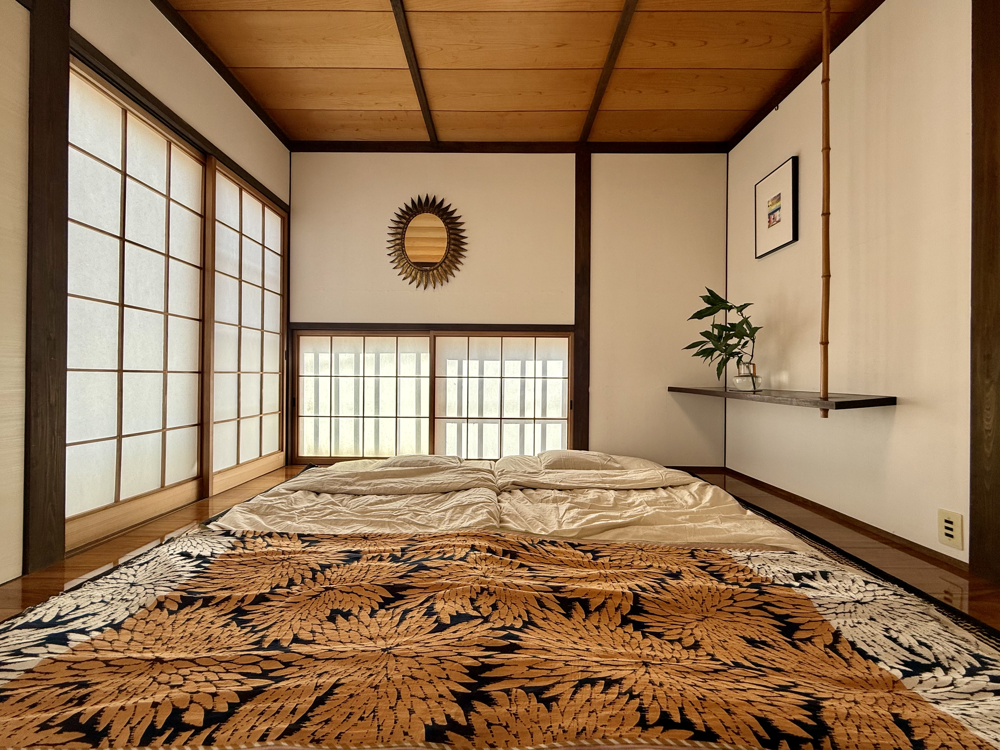

Experience
オーナーの視点で、
オーナーの視点で、
街と交わる。
この空間にあるすべてのもの——朝のコーヒーを淹れる道具から、縁側の設えに至るまで、オーナーの美意識と趣味が色濃く反映されています。
オーナーの使い勝手に合わせたキッチンで地元の食材を料理し、オーナー行きつけの海辺の天然温泉（日帰り温泉）で手足を伸ばす。作られた観光ではなく、「この家を愛する人の、完璧なある1日」をそのままトレースする贅沢を味わってください。
